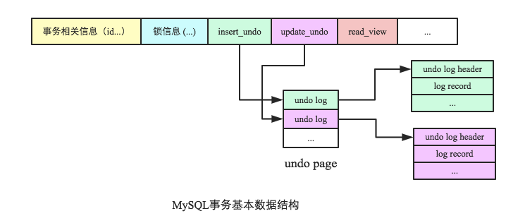
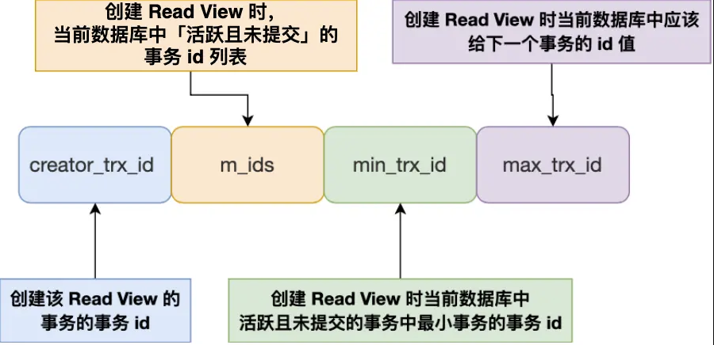

Ch07-MySQL 之 事务
April 1, 2022
数据库事务 (Database Transaction)，是指作为单个逻辑工作单元执行的一系列操作，要么完全执行，要么完全地不执行。要么完全地不执行。一般来说，事务是必须满足 4 个条件 (ACID)：原子性 (Atomicity)、一致性 (Consistency)、隔离性 (Isolation)、持久性 (Durability)。
1. 原子性 (Atomicity) #
概念介绍 #
一个事务中的所有操作，要么全部完成，要么全部不完成，不会结束在中间某个环节。如果事务在执行过程中发生错误，会回滚到事务开始前的状态，就像这个事务从来没有执行过一样。例如，在银行转账操作中，从账户 A 向账户 B 转账 100 元，这个事务包含从账户 A 扣除 100 元以及向账户 B 增加 100 元两个操作。要么这两个操作都成功执行，要么因为任何原因（如账户余额不足）两个操作都不执行，不会出现账户 A 扣除了 100 元但账户 B 没有增加 100 元的情况。
实现原理 #
通过日志和回滚机制实现。在事务执行过程中，数据库会记录所有的操作日志。如果事务执行失败，数据库可以根据日志回滚到事务开始前的状态。例如，InnoDB 存储引擎使用回滚段（Rollback Segment）来存储撤销信息，用于回滚未提交的事务。

上图是 MySQL 中表示事务的基本数据结构，其中与 undo 相关的字段为 insert_undo 和 update_undo，分别指向本次事务所产生的 undo log。
事务回滚根据 update_undo（或者 insert_undo）找到对应的 undo log，做逆向操作即可。对于已经标记删除的数据清理删除标记，对于更新数据直接回滚更新；插入操作稍微复杂一些，不仅需要删除数据，还需要删除相关的聚集索引以及二级索引记录。
readview 的数据结构如下

2. 一致性 (Consistency) #
概念介绍 #
事务必须使数据库从一个一致性状态变换到另一个一致性状态。一致性状态意味着数据库中的数据满足所有定义的约束，如数据类型、唯一性约束、外键约束等。例如，在上述转账事务中，转账前后，数据库中总的账户余额应该保持不变，这就是一种一致性的体现。如果在转账过程中违反了某个约束（如账户 A 余额不足但仍然扣除了金额），事务会回滚以保证一致性。
实现原理 #
通过数据库的约束检查和事务的原子性、隔离性来保证。数据库在执行事务时，会检查数据是否满足各种约束条件（如主键唯一、外键引用正确等）。如果不满足，事务会回滚。同时，原子性确保事务要么全部成功要么全部失败，隔离性防止并发事务干扰，共同维护了一致性。
3. 隔离性 (Isolation) #
概念介绍 #
多个事务并发执行时，一个事务的执行不能被其他事务干扰。即不同事务之间的操作是相互隔离的，每个事务感觉不到其他事务的存在。例如，事务 T1 正在对某条记录进行修改，在事务 T1 提交之前，事务 T2 读取到的应该是修改前的数据，而不是修改中的数据，避免了脏读、不可重复读和幻读等问题。
实现原理 #
通过锁机制和并发控制算法实现。数据库使用不同类型的锁（如共享锁、排他锁）来控制对数据的访问。例如，当一个事务对某条记录加了排他锁时，其他事务不能再对该记录加任何锁，直到该事务释放锁，从而保证了事务之间的隔离性。此外，还有基于时间戳的并发控制、多版本并发控制（MVCC）等机制来实现隔离性，例如 InnoDB 的 MVCC 机制通过维护数据的多个版本，使得读操作可以不阻塞写操作，写操作也可以不阻塞读操作，同时保证事务的隔离性。
说明 #
| 问题 | 说明 |
|---|---|
| Dirty Read | 事务A正在操作某些数据，还未提交。事务B就就看到这些数据 |
| NonRepeatable Read | 事务A正在做范围查询操作，事务B插入/删除了些数据并做了提交。事务A再次做范围查询，结果发现多了或者少了部分数据 |
| Phantom Read | 事务A正在做点查操作，事务B修改了该数据并做了提交。事务A再次做了同样条件的点查，结果发现数据变了 |
| 隔离级别 | 说明 |
|---|---|
| Read uncommitted | 一个事务还没提交时，它做的变更就能被别的事务看到。 |
| Read commited | 一个事务提交之后，它做的变更才会被其他事务看到。 |
| Repeatable read | 一个事务提交之后，它做的变更才会被其他事务看到，但是限定一个事务执行过程中看到的数据，总是跟这个事务在启动时看到的数据是一致。 |
| Serializable | 当出现读写锁冲突的时候，后访问的事务必须等前一个事务执行完成，才能继续执行。 |
InnoDB 默认的隔离级别是 REPEATABLE READ（可重复读），并且通过间隙锁算法 (next-key locking) 策略防止 Phantom Read 的出现
问题 #
对于隔离性出现的不同问题可以采用对应的隔离级别解决。
| Isolation/Question | Dirty Read | NonRepeatable Read | Phantom Read |
|---|---|---|---|
| Read uncommitted | Y | Y | Y |
| Read commited | N | Y | Y |
| Repeatable read | N | N | Y |
| Serializable | N | N | N |
4. 持久性 (Durability) #
概念介绍 #
一个事务一旦提交，它对数据库中数据的改变就应该是永久性的。即使系统发生故障（如断电、系统崩溃等），这些修改也不会丢失。数据库通常通过日志机制来保证持久性，例如重做日志（Redo Log），在事务提交前，会将事务对数据的修改记录到日志中，当系统恢复时，可以根据日志重新应用这些修改。
实现原理 #
MySQL 事务持久化涉及的组件相对比较多，主要有 doublewrite、redo log 以及 binlog。
MySQL 数据持久化（DoubleWrite）
实际上 MySQL 的真实数据写入分为两次写入，一次写入到一个称为 DoubleWrite 的地方，写成功之后再真实写入数据所在磁盘。为什么要写两次？这是因为 MySQL 数据页大小与磁盘一次原子操作大小不一致，有可能会出现部分写入的情况，比如默认 InnoDB 数据页大小为 16K，而磁盘一次原子写入大小为 512 字节（扇区大小），这样一个数据页写入需要多次 IO，这样一旦中间发生异常就会出现数据丢失。另外需要注意的是 DoubleWrite 性能并不会影响太大，因为写入 DoubleWrite 是顺序写入，对性能影响来说不是很大。
redolog 持久化策略（innodb_flush_log_at_trx_commit）
redolog 是 InnoDB 的 WAL，数据先写入 redolog 并落盘，再写入更新到 bufferpool。redolog 的持久化策略默认为 1，表示每次事务提交之后 log 就会持久化到磁盘；该值为 0 表示每隔 1 秒钟左右由异步线程持久化到磁盘，这种情况下 MySQL 发生宕机有可能会丢失部分数据。该值为 2 表示每次事务提交之后 log 会 flush 到操作系统缓冲区，再由操作系统异步 flush 到磁盘，这种情况下 MySQL 发生宕机不会丢失数据，但机器宕机有可能会丢失部分数据。
binlog 持久化策略（sync_binlog）
binlog 作为 Server 层的日志系统，主要以 events 的形式顺序纪录了数据库的各种操作，同时可以纪录每次操作所花费的时间。在 MySQL 官方文档上，主要介绍了 Binlog 的两个最基本核心作用：备份和复制，因此 binlog 的持久化会一定程度影响数据备份和复制的完整性。和 redo 持久化策略相同，可取值有 0，1，N。默认为 0，表示写入操作系统缓冲区，异步 flush 到磁盘。该值为 1 表示同步写入磁盘。为 N 则表示每写 N 次操作系统缓冲就执行一次刷新操作。